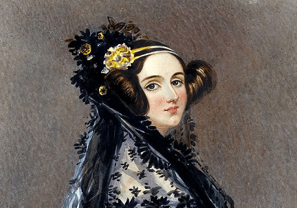
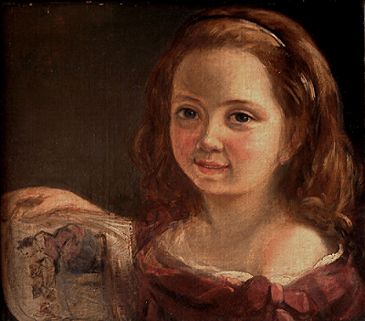
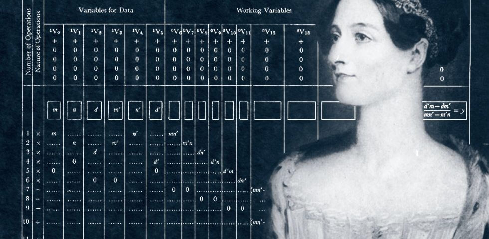

Augusta Ada King, condessa de Lovelace, nasceu em Londres em 1815, mais conhecida como Ada Lovelace. A primeira programadora do mundo, que escreveu o primeiro algoritmo para ser processado por uma máquina na história da computação.
Ada tinha pais bem diferentes: Lord Byron, um poeta romântico conhecido por seus exageros, como ter um urso domesticado em seu quarto, e por seus atos (incomuns para a época), como se relacionar com homens e mulheres. Sua mãe, a rica e culta Annabella Milbanke, era apaixonada por matemática e pouco paciente com as maluquices do marido.
Lord Byron bebia demais e, às vezes, era grosseiro com a esposa. Ada tinha só 5 semanas de vida, quando o casamento de seus pais acabou. Annabella foi mãe solo preocupada em garantir que Ada não ficasse parecida com o pai. Para isso, investiu na educação rigorosa da menina contratando os melhores professores. Acreditava que, se a filha se interessasse por matemática e ciências, se afastaria da poesia e das tendências excêntricas herdadas do pai.
Ada era fascinada por matemática e poesia (para desespero de sua mãe), via poesia nos números e sonhava em voar. Aos doze anos, encantou-se pela engenharia mecânica e escreveu um livro chamado Flyology (ou Voologia), com desenhos de um plano para a construção de uma máquina de voar. Contou para sua mãe sobre a máquina, mas Annabelle achou que Ada estava se desviando dos estudos e lhe deu uma bronca. O sonho de voar foi deixado de lado, pois sua mãe queria que ela se tornasse uma dama.
Aos 17 anos, Ada foi apresentada à corte pela sua mãe, como se fazia na época e passou a ser convidada para festas na cidade. Seu jeito inteligente e rápida atraiu muitos solteiros, mas ela se interessou por um velho matemático chamado Charles Babage, que lhe contou sobre a invenção que trabalhava há anos, a “máquina diferencial”, que fazia grandes cálculos. Ada ficou fascinada pois conheceu alguém que idealizou uma máquina e pode construí-la.
Charles gostou da jovem, ela era uma das poucas pessoas que se interessou e entendeu suas invenções. Quando Ada conheceu a máquina diferencial, viu nela muitas possibilidades que nem mesmo Charles havia pensado. O entusiasmo da jovem matemática o impressionava.
Charles era viúvo e lutava para conseguir investimentos para os seus projetos. Ada se casou e teve 3 filhos. Em 1830, isso significava que ela deveria abandonar os estudos e se dedicar aos filhos. Trocava cartas com Charles, acompanhava o trabalho dele de longe. Tinha pouco tempo para os próprios estudos. Passou a resolver problemas matemáticos à noite, após colocar as crianças para dormir. Contratou um professor para ajudá-la a continuar estudando. O que ela mais queria era trabalhar com Charles em suas máquinas incríveis.
Tempos depois, Charles criou o Engenho Analítico, melhor do que a máquina diferencial, pois seria capaz de analisar dados e guardar informações na memória. Algo tão revolucionário que poucas pessoas entenderam. Ele queria que todo mundo soubesse do que sua máquina era capaz, só que para isso, teria que publicar artigos em francês, língua que ele não sabia, mas Ada era fluente. Como ela entendia as criações de Charles, era a pessoa perfeita para traduzir esses artigos.
Enquanto Ada traduzia o conteúdo, fazia anotações por conta própria, queria garantir que ficaria tudo muito bem explicado para os leitores. Conforme anotava, imaginava inúmeras possibilidades que a máquina teria. Quando percebeu, suas anotações já estavam maiores do que o próprio artigo.
Charles queria que a máquina resolvesse problemas matemáticos. Ada pensava em algo muito maior: os números poderiam ser usados para representar coisas totalmente diferentes como letras, notas musicais e até imagens. Escreveu instruções detalhadas com diagramas e tabelas explicando como o engenho analítico deveria processar uma equação matemática complicada. Dessa forma, a máquina resolveria em segundos uma equação que um humano levaria horas para solucionar. Os computadores ainda não existiam, mas Ada tinha acabado de criar o primeiro programa de computador. Ada não viveu para ver que suas ideias se realizariam na forma dos computadores modernos que usamos hoje.
